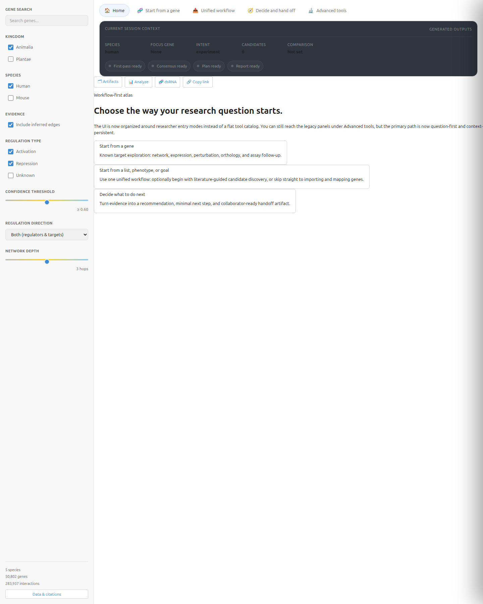
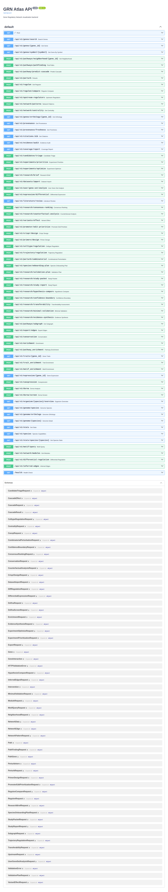

Public Release Update: GRN Atlas Skill Layer, Research Workflows, and LLM Validation
Explore the repository on GitHub →Quick Summary
Today we are publishing a release update for GRN Atlas focused on the skill layer, the research workflows it enables, and the validation work completed across both the application stack and external LLM orchestrators.
GRN Atlas is a multi-species gene regulatory network platform for exploring regulatory edges, promoter and motif context, expression, pathways, traits, orthology, perturbation effects, and RNAi-oriented dsRNA design across human, mouse, Arabidopsis, tomato, and petunia. It includes both an interactive web UI and a structured skill layer for agent-driven workflows.
As of Friday, August 14, 2026, the repository contains 61 documented GRN Atlas skills:
- 60 callable analysis and workflow skills
- 1 overview/router skill
The current published validation results are:
- GPT-5.4 single-skill matrix: 347/347 pass
- GPT-5.4 orchestration matrix: 59/59 pass
- Nemotron-3-Ultra orchestration matrix: 50/59 pass
- Nemotron targeted single-skill diagnostic subset: 36/38 pass
GRN Atlas is being released free for academic and non-commercial use. For commercial use, productization, deployment, or partnership discussions, contact CAIRN Institute.
Why We Built It
Researchers do not usually ask one-step questions.
A real workflow looks more like this:
- identify the regulators of a gene
- compare those regulators across species
- inspect whether motif evidence supports the edge
- ask whether the same story appears in expression
- test what happens if the regulator is perturbed
- design an intervention strategy such as dsRNA
- decide whether the evidence is strong enough to justify an experiment
- hand the result to a collaborator in a readable form
Most biological software handles only one piece of that chain. GRN Atlas was built to close that gap and give researchers a single place to move from question to hypothesis to next action.
What GRN Atlas Is
GRN Atlas is an integrated research workspace for gene regulatory network analysis.
It combines:
- curated regulatory interactions
- inferred regulatory edges
- promoter and motif context
- plant expression panels
- pathway and trait enrichment
- orthology and cross-species conservation
- signed perturbation analysis
- RNAi-oriented dsRNA design and screening
- evidence-audit and experiment-planning workflows
- collaborator-facing study packet and report generation
The atlas currently supports five species: human, mouse, Arabidopsis, tomato, and petunia.
Some layers are measured, some are projected, and some are computationally inferred or predicted. A core design rule is that these are never mixed without labeling.
What You Can Do With It
1. Explore a gene’s regulatory neighborhood
- who regulates this gene?
- what genes does this TF regulate?
- is there a path from gene A to gene B?
- what subgraph connects this candidate set?
2. Interpret a gene set biologically
- what GO terms are enriched?
- what pathways are overrepresented?
- what traits are associated with this set?
- which upstream TFs best explain the genes I care about?
3. Compare across species
- what is the ortholog of this gene?
- is this regulatory edge conserved?
- does a gene-level claim transfer from one species to another?
- what caveats should I keep in mind before extrapolating?
4. Predict interventions
- what happens if I knock out or silence this regulator?
- how does a cascade propagate if a regulator changes expression?
- which downstream genes are predicted to change?
- what biological processes are enriched among affected targets?
5. Design and compare RNAi strategies
- can a dsRNA be designed for this target?
- which of several candidate genes is the cleanest RNAi target?
- which target has the lowest off-target burden?
- what happens downstream if I silence the winner?
6. Turn analysis into decisions
- is there enough atlas coverage for this analysis?
- which candidates should I prioritize?
- what is the confidence boundary here?
- what is the smallest defensible next step?
- how do I turn this into a validation plan, study packet, or report?
The Web UI
GRN Atlas ships with a browser-based interface for interactive exploration and question-first workflows.
- workflow-first researcher entry points
- gene search and species-aware context
- network, expression, perturbation, and dsRNA analysis
- collaborator handoff artifacts and next-step planning
- direct access to advanced analysis panels when needed


The Skill Layer
The skill layer is what turns GRN Atlas from a collection of endpoints into a research workflow system. The skills are documented in-repo, callable directly, and also exposed as agent tools for orchestration.
1. Orientation, search, provenance, and data readiness
These skills answer: what species are available, what is loaded, what can be done, and how do I find or map the genes I care about?
grn-atlas-overview, grn-species, grn-stats,
grn-provenance, grn-citations, grn-gene-search,
grn-gene-info, grn-dataset-import, grn-input-normalization,
grn-coverage-report
2. Core regulatory network structure and graph analysis
These skills cover local neighborhoods, paths, subgraphs, shared regulators, regulons, centrality, modules, motifs, inferred networks, and structural patterns.
grn-network, grn-pathfinding, grn-subgraph,
grn-shared-regulators, grn-regulon, grn-regulon-compare,
grn-upstream, grn-network-patterns, grn-centrality,
grn-module, grn-motif, grn-infer, grn-export
3. Expression, differential context, and support boundaries
These skills provide expression context, coexpression, differential shifts, evidence audits, and honest support boundaries before a researcher acts on a claim.
grn-expression, grn-coexpression, grn-differential-expression,
grn-diff-regulation, grn-evidence-audit, grn-confidence-boundary,
grn-decision-boundary
4. Cross-species reasoning and conservation
These skills support ortholog discovery, conservation checks, transferability analysis, and staged plans for bringing new species into the atlas.
grn-orthology, grn-conservation, grn-transferability,
grn-species-onboarding-plan
5. Perturbation, RNAi, promoter editing, and assay-oriented design
These are the intervention-facing skills: perturbation prediction, cascade modeling, dsRNA design, dsRNA screening, promoter-site analysis, CRISPR heuristics, primer heuristics, and combinatorial perturbation ranking.
grn-perturbation, grn-cascade, grn-dsrna,
grn-dsrna-screen, grn-variant-effect,
grn-promoter-edit-prioritization, grn-crispr-design,
grn-primer-design, grn-combinatorial-perturbation
6. Candidate ranking, uncertainty handling, and hypothesis comparison
These skills support phenotype-first discovery, candidate triage, consensus ranking, counterfactual reasoning, minimal validation, and explicit hypothesis comparison.
grn-phenotype-targeting, grn-candidate-triage,
grn-consensus-ranking, grn-counterfactual-analysis,
grn-minimal-validation, grn-hypothesis-compare,
grn-user-gene-set-analysis
7. Evidence synthesis, literature, planning, and collaborator handoff
These skills turn analysis into a concrete plan and a shareable output.
grn-enrichment, grn-literature-review,
grn-evidence-synthesis, grn-experiment-prioritization,
grn-experiment-optimizer, grn-research-brief,
grn-validation-plan, grn-study-packet,
grn-study-report, grn-celltype-regulation,
grn-trajectory-regulation
Why the Skill Layer Matters
Researchers rarely stop at “find this gene.” They ask chains of questions: find a candidate, test whether the species supports a given analysis, compare alternatives, check uncertainty, choose an intervention, and package the result for a collaborator. The skill layer is what makes those chained workflows tractable for both humans and external agents.
What the Full Skill Layer Enables for Researchers
- atlas navigation and species readiness checks
- single-gene and gene-set regulatory interpretation
- cross-species conservation and transferability analysis
- perturbation and RNAi experiment planning
- candidate ranking under evidence and assay constraints
- literature-grounded follow-up and collaborator handoff
Testing With External LLMs
Current clean repository status: GPT-5.4
The current clean published matrices in the repository are:
- 347/347 PASS on the single-skill GPT-5.4 matrix
- 59/59 PASS on the multi-skill orchestration GPT-5.4 matrix
These are the best statement of the current release status because they reflect the latest expanded skill inventory and the latest workflow chaining behavior.
Nemotron-3-Ultra comparison results
We also tested the same skill layer with Nvidia Nemotron-3-Ultra through OpenRouter as a portability and robustness comparison rather than as the clean release baseline.
- 50/59 PASS on the full orchestration matrix
- 36/38 PASS on a targeted single-skill diagnostic subset
Those comparison runs were useful because they exposed weak routing families, ambiguous starts, and under-chaining patterns that helped harden the final frontmatter and sequencing guidance.
Deterministic and application-level testing
Beyond LLM orchestration, the repository also includes clean automated coverage across the stack:
- 319/319 PASS legacy direct skill harness
- 83/83 PASS legacy HTTP skill harness
- 49/49 PASS integration tests
- 22/22 PASS Playwright end-to-end tests
- 165/165 PASS backend API pytest
- 9/9 PASS frontend Vitest
Data, Evidence, and Trust
GRN Atlas does not pretend every layer is equivalent. Measured, projected, inferred, and predicted evidence are labeled separately. The skill layer includes dedicated support-boundary and confidence-boundary workflows because honest uncertainty is a feature, not a bug.
Release Model
GRN Atlas is being released publicly for academic and non-commercial use.
The code is source-available under the repository’s non-commercial license. Upstream data sources retain their own terms. Commercial use, productization, hosted use, or partnership discussions should be directed to CAIRN Institute.
Repository: https://github.com/cairninstitute/grn-atlas
Commercial / partnership contact: sales@cairninstitute.com
What This Release Is For
This release is for researchers who want:
- a transparent multi-species GRN workspace
- a usable workflow-first UI
- a skill layer that can be orchestrated by LLMs
- clear evidence boundaries before committing to experiments
- an academic-use release with a path to commercial partnership
Frequently Asked Questions
Is the project open source?
No, not in the OSI sense. It is source-available for non-commercial use.
Can I use it for academic research?
Yes, subject to the repository license and the upstream terms for any data sources you use.
What is the cleanest current LLM status?
GPT-5.4 is the clean current release baseline: 347/347 single-skill pass and 59/59 orchestration pass.
Why include Nemotron results at all?
Because cross-model comparison is useful. Nemotron was strong enough to validate broad portability and weak enough to expose where frontmatter, overlap boundaries, and chaining guidance still needed work.